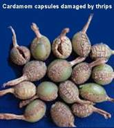

CARDAMOM :: MAJOR PEST :: CARDAMOM THRIPS
1. Cardamom thrips: Sciothrips cardamomi (Thripidae: Thysanoptera)
Distribution and status: India and Papua New Guinea. Most destructive pest of cardamom in South India
Host range: Cardamom, tea, grapevine, castor, cotton Prosopis juliflora, ginger and turmeric.
Damage symptoms : Thrips lacerate the surface tissues of capsules and suck the exuding sap. The injured tissues form a corky layer on the capsule surface which appear as scales. Such capsules appear stunted, malformed and shrivelled with gaping slits on the skin. The condition is popularly known as “cardamom itch”. Seeds from infected capsules give poor germination. At panicle formation stage, infestation causes stunting of panicles and shedding of flowers. Scrapping of capsules lower their quality and quantity to the extent of even 80-90%.
|  |
Bionomics :
Greyish brown full grown adult female lays 5 - 31 minute, kidney shaped eggs on the leaf sheath, flowers and surface tissues of capsules, egg period 9-12 days. I and II nymphal instars lacerate the surface of the tissues; nymphal period 9-12 days; pupal period 3-5 days. Life cycle is completed in 20 -25 days. High temperature and low humidity favours the growth of the insects.
Management
- Maintain plant density with wider spacing of 2.5x2.5 m
- Regulate the shade in open areas
- Remonve and destoy altenate hosts like Panicum longipes, Ammomum sp, Alocasia sp, Colacasia sp
- Remove dry leaves , leaf sheath and old panicles prior to chemical spraying.
- Spray phenthoate 500 ml or dimethoate or quinalphos 1.0 L or diafenthiuron 50 WP 800 g with 500 - 1000 L water/ha